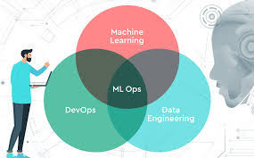
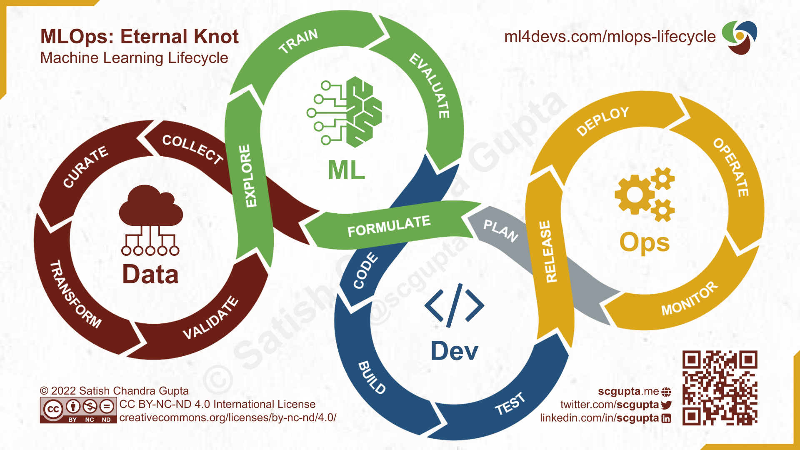

About MLOps
MLOps (Machine Learning Operations) is a practice that combines machine learning, DevOps, and data engineering to manage the end-to-end lifecycle of machine learning models.
- Goal: Streamline and automate the process of developing, deploying, and maintaining ML models in production.
- Key Components:
- Model Development: Building and training models efficiently using frameworks and tools.
- Version Control: Managing code, data, and model versions to ensure reproducibility.
- CI/CD for ML: Automating the testing and deployment of models using continuous integration and deployment practices.
- Monitoring and Logging: Tracking model performance in production and logging key metrics to detect drifts or issues.
- Scalability: Ensuring the infrastructure can handle increased data and model load.
- Collaboration: Bridging gaps between data scientists, ML engineers, and operations teams.

- Benefits:
- Improved model reliability and reproducibility.
- Faster time-to-market for ML solutions.
- Enhanced collaboration between teams.
- Better compliance with data and model governance standards.